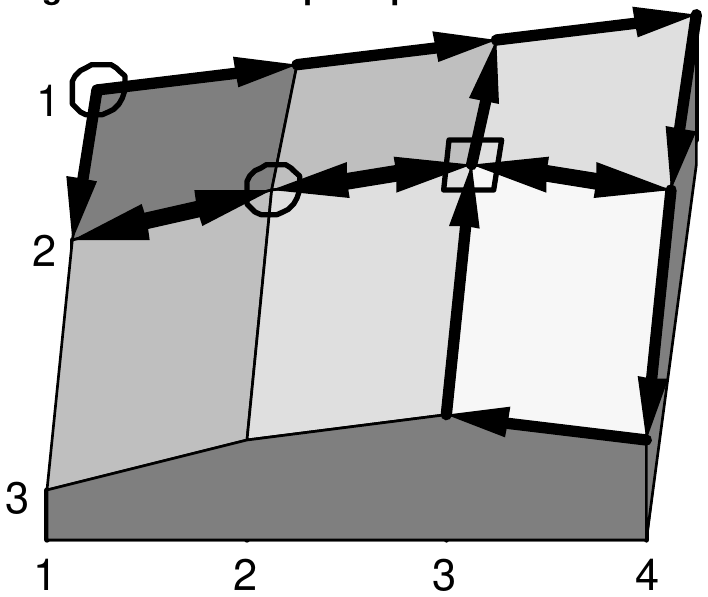

The Nineteenth Annual ACM International Collegiate Programming Contest Finals · Problem A
Jill Bates hates climbing hills. Jill rides a bicycle everywhere she goes, but she always wants to go the easiest and shortest way possible. The good news is that she lives in Greenhills, which has all its roads laid out in a strictly rectangular grid—east-west roads are streets; north-south roads are avenues and the distance between any two adjacent grid points is the same. The bad news is that Greenhills is very hilly and has many one-way roads.
In choosing a route between where she starts and where she ends, Jill has three rules:
Your program should help Jill find an acceptable route.
The input file contains data in the following form:
street avenue street avenueThe first street and avenue define the starting point of the road and the second pair define the ending point. Since Greenhills is a strict grid, if the two points are not adjacent in the grid, the road passes through all the intervening grid points. For example,
5 7 5 10represents roads 5-7 to 5-8, 5-8 to 5-9, and 5-9 to 5-10. Road definitions are terminated by a line containing four zeroes in the above format.
street avenue street avenueAs before, the integer pairs are separated by one or more spaces. The end of the input set is defined by a line containing four zeroes, formatted as before.
You may assume that all street and avenue numbers are within the bounds defined by the first line of input, and that all road definitions are strictly north-south or east-west.
For each path query in the input file, output a sequence of grid points, from the starting grid point to the ending grid point, which meets Jill’s three rules. Output grid points as ‘street-avenue’ separated by the word ‘to’. If there is more than one path that meets Jill’s criteria, any such path will be acceptable. If no route satisfies all the criteria, or if the starting and ending grid points are the same, output an appropriate message to that effect. Output a blank line between each output set.
3 4 10 15 20 25 19 30 35 30 10 19 26 20 1 1 1 4 2 1 2 4 3 4 3 3 3 3 1 3 1 4 3 4 2 4 2 1 1 1 2 1 0 0 0 0 1 1 2 2 2 3 2 3 2 2 1 1 0 0 0 0

1-1 to 1-2 to 1-3 to 1-4 to 2-4 to 2-3 to 2-2 To get from 2-3 to 2-3, stay put! There is no acceptable route from 2-2 to 1-1.